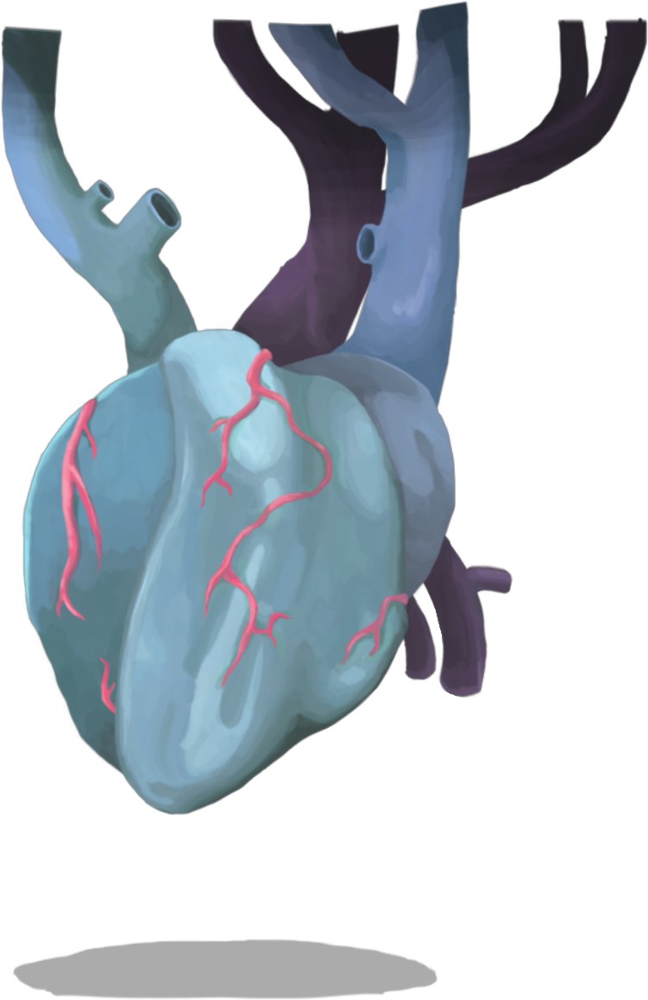

地图即策略
《杀戮尖塔》的每一层地图都在开局时随机生成，由不同类型的节点串成一张有分叉的图。玩家能看到的只有节点类型，看不到里面的具体内容——但仅仅是"看到类型"，就已经足够支撑一整套策略。
因为在爬塔里，资源不是均匀分布的，而是沿路摆放的。同样打五场战斗，路线的不同会让你在到达 Boss 时拥有完全不同的血量、金币、遗物和牌组。选路线因此不是"走哪边都行"，而是本局游戏的第一次重大决策。
节点类型的取舍
地图上的节点大致有以下几类：
- 战斗：普通敌人，提供卡牌三选一与少量金币，是牌组的主要来源。
- 精英：更强的敌人，但击败后必定掉落一件遗物，是提升战力最快的途径。
- 篝火：可以休息回复生命，或"锻造"升级一张卡牌，二选一。
- 商店：用金币购买卡牌、遗物、药水，也可以付费删除一张牌。
- 宝箱：直接获得遗物或金币，不需要战斗。
- 问号事件：结果不确定，可能给你稀有遗物，也可能让你掉血或被迫接受一张诅咒牌。

由此产生了一条被广泛采用的通用原则：优先选择"先篝火、再精英"的路线。原因很直接——篝火能升级核心卡牌，而一次升级往往就足以把精英战的战损压下来。反过来，先进精英再进篝火，等于用最弱的状态去打最难的敌人。
商店的金币分配也有相对固定的优先级：删除废卡 > 购买关键遗物 > 药水。删除之所以排在第一位，是因为牌组越薄，关键牌的上手率越高，而这份收益会一直跟着你到本局结束；药水只能解决眼前这一场战斗。
问号事件是纯粹的"高风险高回报"博弈：收益的上限很高，代价的下限也很低。 这正是 Roguelike 的乐趣来源——你必须在信息不完整的情况下，判断自己现在承受得起多大的风险。
进阶模式：二十级试炼
打通一次游戏之后，玩家会解锁进阶模式。这个模式共有 20 个等级，每一级都会在上一个等级的基础上叠加一条新的负面效果，并且效果会累积——打到进阶 20 时，前面十九级的所有限制同时生效。
进阶等级的施加对象有明显的分段：
- 前段主要强化敌人：精英出现率提升，敌人的伤害与生命值上调。
- 后段主要针对玩家：初始生命值下降、药水栏位减少、商店涨价。
下面是公认最难跨过的三个节点：
从这一级开始，开局牌组中会被强制加入一张诅咒牌尖塔之灾。
它无法被打出，也无法通过商店删除，只带有"虚无"——回合结束时若还留在手里，它会被消耗掉，下一次洗牌再回到你的抽牌堆。
它的意义不在于那张牌本身的数值，而在于它从第一场战斗起就持续占用你的抽牌位。这意味着你不能像低进阶那样"先把牌组打顺再说"，而必须接受每一次洗牌都会少一张可用的牌。
对依赖牌组厚度的打法来说，这一级的压力尤其明显。
这三级的调整集中在敌人一侧：17 级让普通敌人获得更难应付的出招与能力，18 级针对精英，19 级针对 Boss。
它们的共同后果是战斗拖得更长：原本两回合能解决的敌人现在需要三回合，而多出来的那一回合意味着你必须多准备一次防御，或者在牌组里多留一张过渡牌。
进阶模式的终点。在这一级，玩家必须连续击败第三章的两个 Boss，中间没有任何休息机会。
这条规则改变的不只是一场战斗的难度，而是整层的资源规划：你不能再把药水和关键能力牌留给"最终的那一战"，因为真正的最终战之前还有一战。生命值、药水、甚至牌组里的续航类卡牌，都要按"打两场"来配置。
能把进阶 20 打通，通常被视为对一名玩家游戏理解的完整认可。
{kind=link}
进阶模式的难度曲线整体是平滑的，绝大部分等级只是把数值往上推一点。真正的分水岭就是上面那几级——它们不是"更难一点"，而是改变了你规划一局游戏的方式。
最终挑战：腐化之心
在局内集齐三把钥匙之后，击败第三章 Boss 的玩家就能进入隐藏的第四层，面对游戏的最终 Boss：腐化之心。它拥有 750 点生命，进阶 9 级起提高到 800 点。
它与前面所有敌人的区别在于，它同时考验你的输出上限和续航能力——而这两项要求往往是互相冲突的。
腐化之心最著名的能力是"坚不可摧 300"：每回合最多只能对它造成 300 点伤害（进阶 19 级起这一上限降到 200）。这一条直接否定了"堆一波爆发直接秒掉"的思路。你就算能在单回合打出远超 300 的伤害，也会被硬性截断。因此，玩家需要构建能持续输出至少三个回合的稳定体系，而不是把全部资源集中在一个回合。
它的攻击模式同样有明确节奏。第一回合先释放一次减益大招：它不直接造成伤害，而是给你叠上易伤、虚弱与脆弱，并往抽牌堆里塞进烧伤、眩晕等状态牌；随后在两种攻击之间交替：
- 血弹：以多段小额伤害的形式攻击，单段伤害不高，但总次数多，对小额格挡和"每次受到伤害都会触发"的效果都不友好。
- 回响：单次高额伤害，考验你在那一回合有没有足够的格挡或减伤手段。
从第四回合开始，它每三回合会自我强化一次。这意味着战斗不能无限拖下去：即使你打得很稳，心脏的强度也会随时间往上走，拖得越久，容错越低。
{kind=link}

应对它的思路因此非常清晰：先用减益抗性与回复手段活过前几回合，再用一个能持续三回合以上的输出体系把它打下去。面对腐化之心，输出不是唯一的问题——如何在减益和连续攻击下活下来，同样是问题的一半。
- 每层地图随机生成，节点分战斗、精英、篝火、商店、宝箱与问号事件；路线本身就是核心策略。
- 通用原则是"先篝火、再精英"：篝火升级核心卡牌能显著降低精英战战损；精英击败后必掉遗物。
- 商店金币的优先顺序是删除废卡、再考虑关键遗物，药水只在紧急时购买。
- 进阶模式共 20 级且效果累积：10 级强制加入无法删除的诅咒牌"尖塔之灾"，20 级要求连续击败第三章两个 Boss。
- 腐化之心拥有"坚不可摧 300"（进阶 19 级起为 200），第一回合先放减益大招，之后在"血弹"与"回响"之间交替，并从第四回合起每三回合自我强化一次。